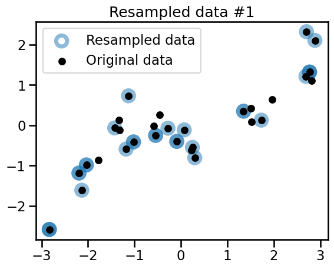
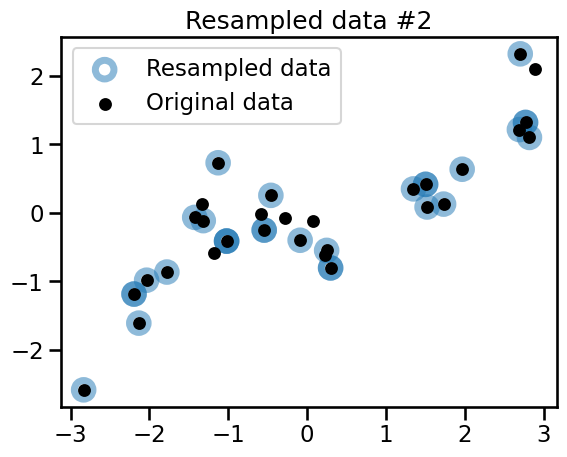
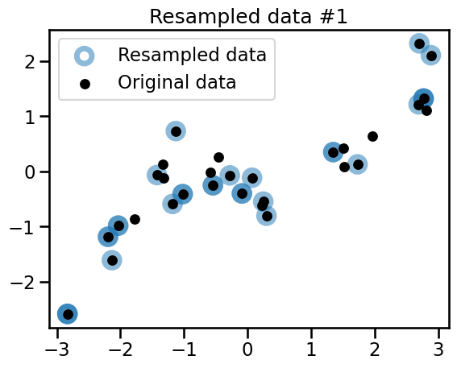
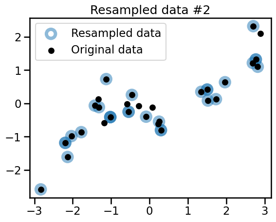

Bagging#
In this notebook we introduce a very natural strategy to build ensembles of machine learning models, named “bagging”.
“Bagging” stands for Bootstrap AGGregatING. It uses bootstrap resampling (random sampling with replacement) to learn several models on random variations of the training set. At predict time, the predictions of each learner are aggregated to give the final predictions.
We first create a simple synthetic dataset to better understand bootstrapping.
import pandas as pd
import numpy as np
def generate_data(n_samples=30):
"""Generate synthetic dataset. Returns `data_train`, `data_test`,
`target_train`."""
x_min, x_max = -3, 3
rng = np.random.default_rng(1) # Create a random number generator
x = rng.uniform(x_min, x_max, size=n_samples)
noise = 4.0 * rng.normal(size=(n_samples,))
y = x**3 - 0.5 * (x + 1) ** 2 + noise
y /= y.std()
data_train = pd.DataFrame(x, columns=["Feature"])
data_test = pd.DataFrame(
np.linspace(x_max, x_min, num=300), columns=["Feature"]
)
target_train = pd.Series(y, name="Target")
return data_train, data_test, target_train
import matplotlib.pyplot as plt
import seaborn as sns
data_train, data_test, target_train = generate_data(n_samples=30)
sns.scatterplot(
x=data_train["Feature"], y=target_train, color="black", alpha=0.5
)
_ = plt.title("Synthetic regression dataset")
The target to predict is a non-linear function of the only feature. However, a decision tree is capable of approximating such a non-linear dependency:
from sklearn.tree import DecisionTreeRegressor
tree = DecisionTreeRegressor(max_depth=3, random_state=0)
tree.fit(data_train, target_train)
y_pred = tree.predict(data_test)
Remember that the term “test” here refers to data that was not used for training and computing an evaluation metric on such a synthetic test set would be meaningless.
sns.scatterplot(
x=data_train["Feature"], y=target_train, color="black", alpha=0.5
)
plt.plot(data_test["Feature"], y_pred, label="Fitted tree")
plt.legend()
_ = plt.title("Predictions by a single decision tree")
Let’s see how we can use bootstrapping to learn several trees.
Bootstrap resampling#
Bootstrapping involves uniformly resampling n data points from a dataset of
n points, with replacement, ensuring each sample has an equal chance of
selection.
As a result, the output of the bootstrap sampling procedure is another dataset
with n data points, likely containing duplicates. Consequently, some data
points from the original dataset may not be selected for a bootstrap sample.
These unselected data points are often referred to as the out-of-bag sample.
We now create a function that, given data and target, returns a
resampled variation data_bootstrap and target_bootstrap.
def bootstrap_sample(data, target, seed=0):
# Indices corresponding to a sampling with replacement of the same sample
# size than the original data
rng = np.random.default_rng(seed)
bootstrap_indices = rng.choice(
np.arange(target.shape[0]),
size=target.shape[0],
replace=True,
)
# In pandas, we need to use `.iloc` to extract rows using an integer
# position index:
data_bootstrap = data.iloc[bootstrap_indices]
target_bootstrap = target.iloc[bootstrap_indices]
return data_bootstrap, target_bootstrap
We generate 3 bootstrap samples and qualitatively check the difference with the original dataset.
n_bootstraps = 3
for bootstrap_idx in range(n_bootstraps):
# draw a bootstrap from the original data
data_bootstrap, target_bootstrap = bootstrap_sample(
data_train,
target_train,
seed=bootstrap_idx, # ensure bootstrap samples are different but reproducible
)
plt.figure()
plt.scatter(
data_bootstrap["Feature"],
target_bootstrap,
color="tab:blue",
facecolors="none",
alpha=0.5,
label="Resampled data",
s=180,
linewidth=5,
)
plt.scatter(
data_train["Feature"],
target_train,
color="black",
s=60,
alpha=1,
label="Original data",
)
plt.title(f"Resampled data #{bootstrap_idx}")
plt.legend()
 



Observe that the 3 variations all share common points with the original dataset. Some of the points are randomly resampled several times and appear as darker blue circles.
The 3 generated bootstrap samples are all different from the original dataset and from each other. To confirm this intuition, we can check the number of unique samples in the bootstrap samples.
data_train_huge, data_test_huge, target_train_huge = generate_data(
n_samples=100_000
)
data_bootstrap_sample, target_bootstrap_sample = bootstrap_sample(
data_train_huge, target_train_huge
)
ratio_unique_sample = (
np.unique(data_bootstrap_sample).size / data_bootstrap_sample.size
)
print(
"Percentage of samples present in the original dataset: "
f"{ratio_unique_sample * 100:.1f}%"
)
Percentage of samples present in the original dataset: 63.2%
On average, roughly 63.2% of the original data points of the original dataset are present in a given bootstrap sample. Since the bootstrap sample has the same size as the original dataset, there are many samples that are in the bootstrap sample multiple times.
Using bootstrap we are able to generate many datasets, all slightly different. We can fit a decision tree for each of these datasets and they all shall be slightly different as well.
bag_of_trees = []
for bootstrap_idx in range(n_bootstraps):
tree = DecisionTreeRegressor(max_depth=3, random_state=0)
data_bootstrap_sample, target_bootstrap_sample = bootstrap_sample(
data_train, target_train, seed=bootstrap_idx
)
tree.fit(data_bootstrap_sample, target_bootstrap_sample)
bag_of_trees.append(tree)
Now that we created a bag of different trees, we can use each of the trees to predict the samples within the range of data. They shall give slightly different predictions.
sns.scatterplot(
x=data_train["Feature"], y=target_train, color="black", alpha=0.5
)
for tree_idx, tree in enumerate(bag_of_trees):
tree_predictions = tree.predict(data_test)
plt.plot(
data_test["Feature"],
tree_predictions,
linestyle="--",
alpha=0.8,
label=f"Tree #{tree_idx} predictions",
)
plt.legend()
_ = plt.title("Predictions of trees trained on different bootstraps")
Aggregating#
Once our trees are fitted, we are able to get predictions from each of them. In
regression, the most straightforward way to combine those predictions is just
to average them: for a given test data point, we feed the input feature values
to each of the n trained models in the ensemble and as a result compute n
predicted values for the target variable. The final prediction of the ensemble
for the test data point is the average of those n values.
We can plot the averaged predictions from the previous example.
sns.scatterplot(
x=data_train["Feature"], y=target_train, color="black", alpha=0.5
)
bag_predictions = []
for tree_idx, tree in enumerate(bag_of_trees):
tree_predictions = tree.predict(data_test)
plt.plot(
data_test["Feature"],
tree_predictions,
linestyle="--",
alpha=0.8,
label=f"Tree #{tree_idx} predictions",
)
bag_predictions.append(tree_predictions)
bag_predictions = np.mean(bag_predictions, axis=0)
plt.plot(
data_test["Feature"],
bag_predictions,
label="Averaged predictions",
linestyle="-",
)
plt.legend(bbox_to_anchor=(1.05, 0.8), loc="upper left")
_ = plt.title("Predictions of bagged trees")

The continuous red line shows the averaged predictions, which would be the final predictions given by our ‘bag’ of decision tree regressors. Note that the predictions of the ensemble is more stable because of the averaging operation. As a result, the bag of trees as a whole is less likely to overfit than the individual trees.
Bagging in scikit-learn#
Scikit-learn implements the bagging procedure as a meta-estimator, that is, an estimator that wraps another estimator: it takes a base model that is cloned several times and trained independently on each bootstrap sample.
The following code snippet shows how to build a bagging ensemble of decision
trees. We set n_estimators=100 instead of 3 in our manual implementation
above to get a stronger smoothing effect.
from sklearn.ensemble import BaggingRegressor
bagged_trees = BaggingRegressor(
estimator=DecisionTreeRegressor(max_depth=3),
n_estimators=100,
)
_ = bagged_trees.fit(data_train, target_train)
Let us visualize the predictions of the ensemble on the same interval of data:
sns.scatterplot(
x=data_train["Feature"], y=target_train, color="black", alpha=0.5
)
bagged_trees_predictions = bagged_trees.predict(data_test)
plt.plot(data_test["Feature"], bagged_trees_predictions)
_ = plt.title("Predictions from a bagging regressor")
Because we use 100 trees in the ensemble, the average prediction is indeed slightly smoother but very similar to our previous average plot.
It is possible to access the internal models of the ensemble stored as a
Python list in the bagged_trees.estimators_ attribute after fitting.
Let us compare the based model predictions with their average:
for tree_idx, tree in enumerate(bagged_trees.estimators_):
label = "Predictions of individual trees" if tree_idx == 0 else None
# we convert `data_test` into a NumPy array to avoid a warning raised in scikit-learn
tree_predictions = tree.predict(data_test.to_numpy())
plt.plot(
data_test["Feature"],
tree_predictions,
linestyle="--",
alpha=0.1,
color="tab:blue",
label=label,
)
sns.scatterplot(
x=data_train["Feature"], y=target_train, color="black", alpha=0.5
)
bagged_trees_predictions = bagged_trees.predict(data_test)
plt.plot(
data_test["Feature"],
bagged_trees_predictions,
color="tab:orange",
label="Predictions of ensemble",
)
_ = plt.legend()
We used a low value of the opacity parameter alpha to better appreciate the
overlap in the prediction functions of the individual trees. Such
visualization also gives us an intuition on the variance in the predictions
across different zones of the feature space.
Bagging complex pipelines#
Even if here we used a decision tree as a base model, nothing prevents us from using any other type of model.
As we know that the original data generating function is a noisy polynomial transformation of the input variable, let us try to fit a bagged polynomial regression pipeline on this dataset:
from sklearn.linear_model import Ridge
from sklearn.preprocessing import PolynomialFeatures
from sklearn.preprocessing import MinMaxScaler
from sklearn.pipeline import make_pipeline
polynomial_regressor = make_pipeline(
MinMaxScaler(),
PolynomialFeatures(degree=4, include_bias=False),
Ridge(alpha=1e-10),
)
This pipeline first scales the data to the 0-1 range using MinMaxScaler. It
then generates degree-4 polynomial features. By design, these features remain
in the 0-1 range, as any power of x within this range also stays within 0-1.
Then the pipeline feeds the resulting non-linear features to a regularized linear regression model for the final prediction of the target variable.
Note that we intentionally use a small value for the regularization parameter
alpha as we expect the bagging ensemble to work well with slightly overfit
base models.
The ensemble itself is simply built by passing the resulting pipeline as the
estimator parameter of the BaggingRegressor class:
bagging = BaggingRegressor(
estimator=polynomial_regressor,
n_estimators=100,
random_state=0,
)
_ = bagging.fit(data_train, target_train)
for i, regressor in enumerate(bagging.estimators_):
# we convert `data_test` into a NumPy array to avoid a warning raised in scikit-learn
regressor_predictions = regressor.predict(data_test.to_numpy())
base_model_line = plt.plot(
data_test["Feature"],
regressor_predictions,
linestyle="--",
alpha=0.2,
label="Predictions of base models" if i == 0 else None,
color="tab:blue",
)
sns.scatterplot(
x=data_train["Feature"], y=target_train, color="black", alpha=0.5
)
bagging_predictions = bagging.predict(data_test)
plt.plot(
data_test["Feature"],
bagging_predictions,
color="tab:orange",
label="Predictions of ensemble",
)
plt.ylim(target_train.min(), target_train.max())
plt.legend()
_ = plt.title("Bagged polynomial regression")

The predictions of this bagged polynomial regression model looks qualitatively better than the bagged trees. This is somewhat expected since the base model better reflects our knowledge of the true data generating process.
Again the different shades induced by the overlapping blue lines let us appreciate the uncertainty in the prediction of the bagged ensemble.
To conclude this notebook, we note that the bootstrapping procedure is a generic tool of statistics and is not limited to build ensemble of machine learning models. The interested reader can learn more on the Wikipedia article on bootstrapping.